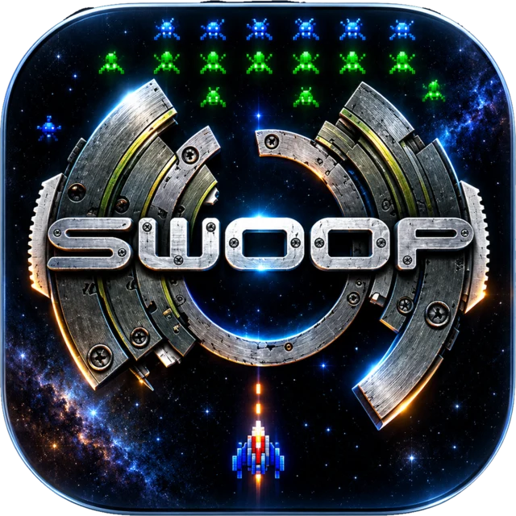
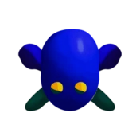
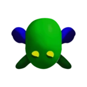
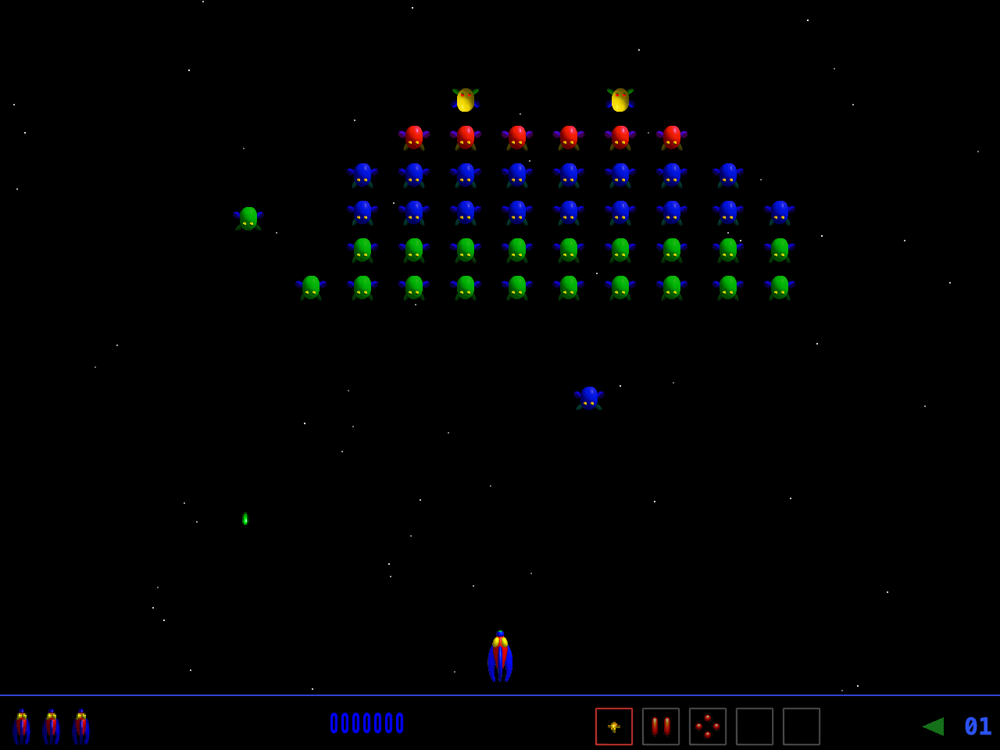
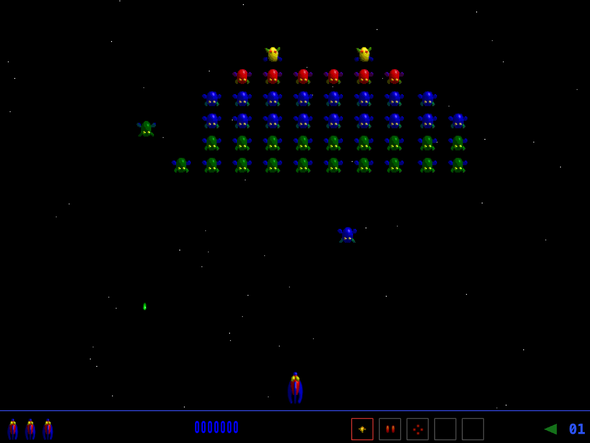

Read the formation.
Watch the swarm, track diving enemies and find your opening. Familiar patterns return in a new native implementation.
THE MAC CLASSIC, REIMAGINED
One ship. A sky full of trouble. Swoop, the Mac arcade shooter from 1996, takes flight again in a native Swift port.
New graphics or original pixels. The choice is yours.



01 / THE GAME
Break the formation, dodge the dive attacks and make every shot count. Original flight patterns, weapons and challenge waves are at the heart of this port.
Watch the swarm, track diving enemies and find your opening. Familiar patterns return in a new native implementation.
Put special weapons and shields to work, chase score multipliers and take on the challenge waves.
Play with a keyboard or controller. Choose your graphics, soundtrack, sound effects and language in Settings.
02 / TWO WAYS TO FLY
Go sharp with New Mode and its HD artwork, or switch to Classic Mode for the original pixel graphics.
Change the look during play. Your run keeps going.
In the game: Ctrl + C


New Mode — HD graphics. Actual capture of the native port.
03 / FAN FAVORITES INCLUDED
The classic NAMCO and Star Wars fan projects are integrated as optional audio add-ons. Pick them directly in Settings.
Give your run the fan-made NAMCO sound pack. An alternative set of arcade sound effects, selectable alongside the original sounds.
Fly with the integrated Star Wars: TIE Fighter fan music add-on. Choose it as your soundtrack while keeping your preferred sound effects.
Mix and match: both add-ons work with New Mode and Classic Mode. The original sound effects and three original soundtracks are also available.
04 / READY WHEN YOU ARE
Start with the classic keyboard layout, or remap the four ship actions under Settings → Controller.
Controller support is built in. Music and graphics settings are available with a keyboard, too.
YOUR NEXT FLIGHT
Find Swoop releases and follow the project on GitHub. Your next high score is waiting.
For macOS 11 or later.
SWOOP.
BEFORE TAKEOFF